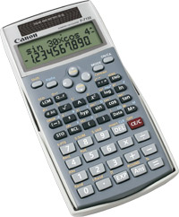
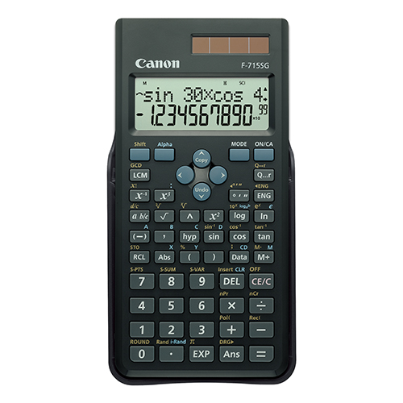
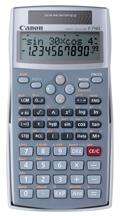
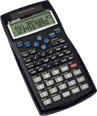
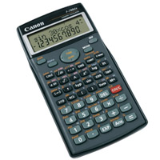
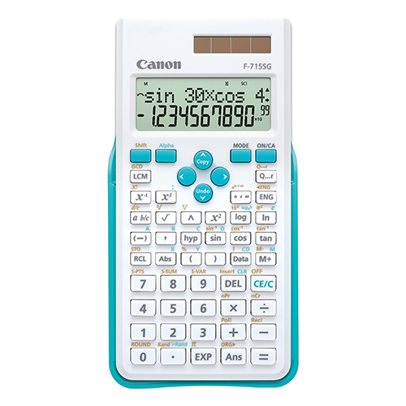
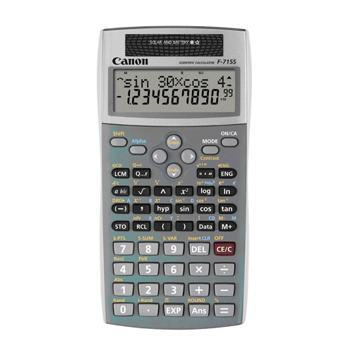

WebCal 計數機網頁
CANON F-715S、F-715SG、F-716S、F-766S及F-788dx簡介
|  |  |  |  |  |
| F-715S | F-715SG(新) | F-716S | F-766S | F-788dx |
2007年CANON公司推出四款科學函數計算機(非程式型號)，分別為F-715S、F-716S、F-766S及F-788dx， 四部計算機都雙行顯示屏，上行顯示輸入的算式，下行顯示計算結果，操作方法採用高級算式順序輸入法(A.D.A.L.)，即是將算式依書寫的順序輸入計算機。另外三部計算機有重現記憶拷貝(Copy)功能，可以複製重現記憶，執行多語句計算。計算對數(log)時，可以容許設定對數底的值。
F-715S已獲香港考評局接納為文憑試准用計算機，可以在香港中學公開考試中使用。相對F-715S的功能較少，只有250個計算功能，F-715S沒有基數、複數及微積分計算等功能，但最特別的是這部計算機加入了最大公因數(GCD)、最小公倍數(LCM)、商及餘數計算功能，這些功能都是現時絶大多數會考計算機沒有的功能。另外這部計算機有17個數字記憶，亦比現時大多數會考計算機只有7至10個記憶為多。
F-716S及 F-766S功能比F-715S多，F-716S及F-766S分別有288個及349個計算功能，基本上除了F-715的功能外，較特別的是有內置38個程式，與舊款CASIO fx-50F內置程式相比，除了內置程式數目更多外，似乎更實用、更適合中學使用，其中20個程式與數學有關，11個程式用作計算面積及體積(例如: 三角形面積及扇形面積)，其它的是平方數和、立方數和、等差數列、等比數列、兩點間距離、餘弦定律及正弦定律。另外18個程式則與物理學有關，亦有適合中學使用(例如: 均加速度直線運動)。其實F-716S及F-766S頗為適合香港會考使用，不過與CASIO fx-50F PLUS相似，因內置程式可以同時顯示計算所用的公式，因此F-716S及F-766S不會獲香港考評局接納為准用計算機，真是有點可惜。 另外F-766S還有基數、複數、常態分佈概率、一元二次方程、一元三次方程、聯立二元一次方程、聯立三元一次方程及解方程式計算等功能。
F-715SG(新)在2013年推出，亦獲香港考評局接納為文憑試准用計算機，它的計算功能與舊款F-715S完全相同，但亦有小許改善及分別:
1. 新F-715SG刪除了螢幕對比度的調整，可能是新的螢幕較理想不用調整。
2. F715SG的重現記憶(Replay memory)為256 bytes，較舊款F-715S只有128 bytes多出一倍容量，可以記存更多計算記錄。
3. F715SG較長一點，面積較大，但較薄及較輕一點，按鈕總數比舊款F-715S多二個，計算功能在按鈕的位置亦有所改變，如下圖所示:
|  |  |
| F-715SG(新) | F-715S |
例如: F-715SG的排列組合及座標轉換功能見(nPr、nCr、Pol(及Rec(功能)編排在加減乘除的按鈕位置，這與舊款F-715S不同，編排上與CASIO fx-50FH很相似，常用的倒數及三次方改為可以直接按出(舊的按多按Shift)等，按排上有助提升運作效率。
五部計算機中，F-788dx功能最多，共有497個功能，包括基數、複數、微積分、向量、矩陣、79個科學常數、170種單位轉換、工程符號(f、p、n、μ、m、k、M、G及T)及方程式計算等等功能，所以理論上F-788dx是一部相當不錯的科學函數計算機，更有20個數字記憶，不過由於多於7個英文字母記憶，因此F-788dx不會獲香港考評局接納為准用計算機，實在有點可惜。